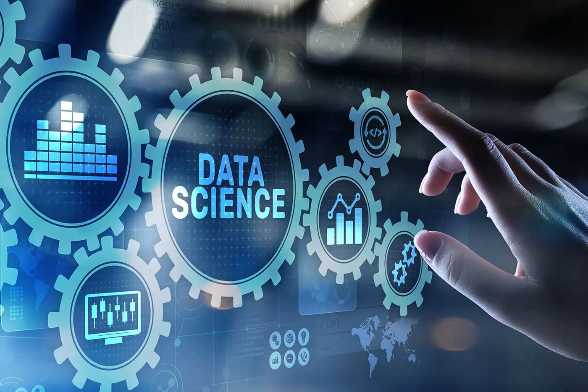

Data Science Applications in Education

Education is an extraordinarily diverse industry. Across institutions, hundreds of different departments exist with intersecting and entirely different data stores, some of which are necessary but others not.
This is different in higher education. Educational bureaucracies are present in grades K-12, with comparable data needs.
They are sifting through this data to figure out which is one of the specialties of data science and is central to data science applications in education.
Education is one of many disciplines here with many functions, however. Data science itself is different in all cases. Some data scientists specialize in database architecture building, while others interpret and analyze data to generate comprehensible reports for educators.
Data Security
Because of the prevalence of the internet in all realms of life, cyber security has become a hot-button topic. It will increasingly continue to do so indefinitely.
That’s why the Bureau of Labor Statistics predicts that jobs related to cyber security and computer science will generally grow from 2021-2031, making such jobs lucrative and highly secure.
For computers to function well, they need good cybersecurity software to prevent hackers from obtaining sensitive data and exploiting it.
This software should also detect potentially threatening data downloaded on one’s computer.
Data scientists can function as the cyber-security software of an entire organization, storing data manually and protecting it in real time from potential online threats.
Data science in education is, therefore, fundamental. Moreover, the data records educational intuitions possess and which they need to function appropriately contain highly sensitive information, including the personal and health information of students, faculty, and staff.
Hence, educational institutions need something more substantial than software to protect and manage their data.
The more sensitive the data is, and the larger the institution becomes, the more data science becomes necessary. This is exactly why data scientists are also critical to the government, healthcare, and the financial industry.
Data Collection
The larger an institution becomes, the more data it receives and transmits.
Most of the data anyone online receives daily could be more valuable. However, collecting such information over time can lead to needless disorganization.
Data scientists control data collection by institutions by filtering out useless and harmless data so that relevant information is given precedence and can be easier to find.
Have you ever noticed that spam still gets through even when anti-virus software programs are applied to one’s email?
Data science in education can be noticed when most student, staff, or faculty emails receive little spam. This is because a data scientist has filtered the data, preventing spam from passing.
Therefore, data collection in data science dovetails with data security, as collecting data properly ultimately prevents viruses and compromising malware from entering one’s computer system.
When such harmful data passes through, this can cause institution-wide malfunctions that slow down administrative processes and sometimes even delay proper payrolls.
Data Interpretation
Data interpretation is one of the most valuable functions of data science in education.
While educators chronically receive data, they can rarely use it if it needs to be interpreted and filtered.
Educators, however, need to use it. Having data related to student performance metrics can help them personalize their approaches to teaching, which according to the U.S. Department of Education, significantly improves grades, test scores, and student behavior.
Teachers provide data to data scientists, including a combination of teaching methods, individual student performance records, and interpersonal student responses to both.
Data scientists can use this information to create models that individualize approaches to teaching each student. For example, because not all students learn alike, traditional lecturing in front of a classroom with a chalkboard and PowerPoint cannot be the only method used. Students need more attention than that.
Educational data-driven initiatives work better than such traditional methods. This is because they not only adapt to personalize education from student to student but also adapt to unique changes in student learning methods throughout their development.
Higher education institutions can also use data scientists in education to train educators on how to approach their teaching practices with data in mind.
Receiving usefully interpreted data reports from a data scientist is one thing. However, deeply comprehending the data, so it is applicable in classroom or lecture hall settings is another. Using data this way requires formal training, which teachers seldom receive in graduate-level teaching school courses. Personalized education requires the collaboration of data scientists and educators in learning how to use data to better student outcomes.
In many cases, schools aren’t well-funded or well-staffed enough for teachers to give each student immense levels of one-on-one time.
Therefore, the data reports used by data scientists can help educators alter their lectures to include other forms of learning than simply listening or reading the chalkboard.
In all cases, data science in education reaps an immense degree of benefits from the products of data interpretation.
Data Science in Education Research
Graduate students in almost all academic disciplines need an understanding of data analysis to produce research and publish papers in academic journals.
In other words, to conduct academic research, academics must have a good understanding of data science. This is because most academic research in scholarly journals consists of interpreted data from which academics and scientists can draw conclusions or discussions.
Data scientists can find themselves tutoring graduate students across all university departments and even adjunct professing courses like psychological statistics.
This is because while many academic disciplines at a high-level use data science, often data science is not taught. Outside of direct data science coursework or related career or degree paths like statistics or actuarial science, one isn’t likely to get a lecture on how to code or create data models.